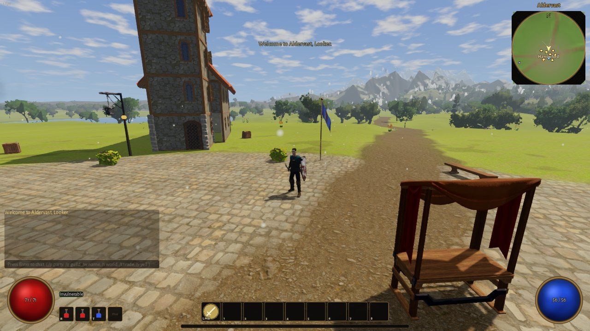

Play Aldervast
Version 1.14.41, free. The game for Windows and Linux, and a dedicated server for Linux or Windows if you want a world that stays up for your friends.
Download Aldervast 1.14.41
The Windows download is one zip; the Linux one comes in two parts. What's new in 1.14.41.
Aldervast for Windows
The whole game in one zip: Single Player, Host a Game and Join a Server. 64-bit Windows 10 or 11.
- Unzip it anywhere you like, such as your Documents or Games folder.
- Open the Aldervast folder and run Aldervast.exe. Keep the two .pck files next to it.
- The game is not code-signed yet, so Windows may say it is from an unknown publisher: choose More info, then Run anyway.
- Pick Single Player to play straight away. No account or connection is needed.
Saves, settings and logs live in %APPDATA%\Godot\app_userdata\Aldervast, so a new version unzipped anywhere finds your characters.
Check the download (SHA-256)
- Aldervast-1.14.41-windows.zip
d285fa4b5962313035e7326f963707ccb80990d8ec1b23fcdea5978532c26e89
Aldervast for Linux
The same game for 64-bit (x86_64) Linux with a Vulkan driver, in two parts.
- Download both parts. Each is a zip that holds half of one Aldervast folder.
- Unzip both in the same place, so they fill the same folder, then run the game:
unzip Aldervast-1.14.41-linux-part1-of-2.zip
unzip Aldervast-1.14.41-linux-part2-of-2.zip
cd Aldervast
./aldervast.x86_64If it will not start, run chmod +x aldervast.x86_64 first. Saves, settings and logs live in ~/.local/share/godot/app_userdata/Aldervast.
Check the download (SHA-256)
- Aldervast-1.14.41-linux-part1-of-2.zip
747e5110d732cc546e14634d4f245f6d2147e3a1e2cefa7ccc3e83d750bd7e36 - Aldervast-1.14.41-linux-part2-of-2.zip
3bb6e908776c2c243e3060ff6f0248ded2197dfecc9f0482122d5f8f1b150a42
Keep a world running
Single Player and Host a Game need nothing extra. A dedicated server keeps the world up when you are not playing; it runs the same code as the game, and a client joins it with Join a Server.
Dedicated server for Linux
A headless server for an x86_64 Linux machine or VPS. The VPS guide below sets it up as a service.
- Unzip it and start the server:
unzip Aldervast-1.14.41-server-linux.zip
cd server-linux
./start_server.sh- Let UDP port 24650 in, and friends join with Join a Server.
Check the download (SHA-256)
- Aldervast-1.14.41-server-linux.zip
4ce0c3680f80dde516e581a21c3bcfac52d597707c6232ae49507b49b72eb032
Dedicated server for Windows
The same server for a Windows PC that stays on.
- Unzip it, open server-windows and double-click start_server.bat. The world is saved in server_data beside it.
- Let UDP port 24650 in. In an administrator PowerShell:
New-NetFirewallRule -DisplayName "Aldervast" `
-Direction Inbound -Protocol UDP `
-LocalPort 24650 -Action Allow- For friends outside your home network, forward UDP 24650 on your router to this PC.
Stop it with Ctrl+C. It saves every 30 seconds, so at most the last half minute is lost.
Check the download (SHA-256)
- Aldervast-1.14.41-server-windows.zip
78db44e176af0adf0384294932cc54b885a2a686ea7f8d6dcbadb0a8beb0d785
Installing the server on a VPS
For Ubuntu 22.04 or 24.04. Every command runs on the VPS; replace VPS_IP with its public address.
What you need to know first
- Port: 24650, UDP. Nothing uses TCP, so a TCP-only firewall rule will not work.
- CPU: the server is an x86_64 (Intel or AMD) program. It will not run on an ARM VPS such as Hetzner CAX, Oracle Ampere or AWS Graviton (you would see
Exec format error). - Size: about 350 MB of memory and almost no CPU when idle. 1 vCPU and 1 GB is fine for a group of friends; 2 GB gives headroom.
- Saving: the server saves every 30 seconds and keeps hourly snapshots (the newest 5) in
data/backup/. It saves everything when told to stop through its stop file; a plain kill exits without that final save, which is why the service below uses the stop file.
1. Download and install
Log in with ssh root@VPS_IP, then (drop sudo if you are root):
sudo apt update && sudo apt install -y unzip wget
# a user with no login shell runs the server
sudo useradd --system --create-home --home-dir /home/aldervast --shell /usr/sbin/nologin aldervast
# download, and check the file is intact (must print: OK)
cd /tmp
wget https://github.com/versyxdigital/aldervast/releases/download/v1.14.41/Aldervast-1.14.41-server-linux.zip
echo "4ce0c3680f80dde516e581a21c3bcfac52d597707c6232ae49507b49b72eb032 Aldervast-1.14.41-server-linux.zip" | sha256sum -c
# program in /home/aldervast/server, saves in /home/aldervast/data
sudo unzip -q Aldervast-1.14.41-server-linux.zip -d /home/aldervast/
sudo mv /home/aldervast/server-linux /home/aldervast/server
sudo mkdir -p /home/aldervast/data
sudo chmod +x /home/aldervast/server/aldervast_server.x86_64
sudo chown -R aldervast:aldervast /home/aldervast
rm /tmp/Aldervast-1.14.41-server-linux.zipThe saves live in their own folder, so updating the program never touches them. A quick test run (Ctrl+C stops it, which is fine while nobody is playing):
sudo -u aldervast /home/aldervast/server/aldervast_server.x86_64 --headless -- --port=24650 --data-dir=/home/aldervast/dataAfter about 3 seconds it prints ALDERVAST SERVER READY port=24650.
2. Open the port
Allow SSH first so you don't lock yourself out:
sudo ufw allow OpenSSH
sudo ufw allow 24650/udp
sudo ufw enable
sudo ufw statusMost VPS hosts also have a firewall in their web control panel (Hetzner Firewalls, DigitalOcean Networking > Firewalls, Vultr Firewall, AWS or Lightsail security groups, Oracle security lists). If yours has one switched on, add an inbound rule for UDP port 24650 from anywhere.
3. Run it as a service
A service keeps the server running, restarts it after a crash and starts it on boot. Download aldervast.service into place:
sudo wget -O /etc/systemd/system/aldervast.service https://aldervast.online/files/aldervast.service
sudo systemctl daemon-reload
sudo systemctl enable --now aldervast
journalctl -u aldervast -fYou should see ALDERVAST SERVER READY, then a status line every 30 seconds (Ctrl+C leaves the viewer; the server keeps running). The service starts the server like this:
[Unit]
Description=Aldervast dedicated server
After=network-online.target
Wants=network-online.target
[Service]
Type=simple
User=aldervast
Group=aldervast
WorkingDirectory=/home/aldervast/server
ExecStartPre=/bin/rm -f /home/aldervast/stop
ExecStart=/home/aldervast/server/aldervast_server.x86_64 --headless -- --port=24650 --data-dir=/home/aldervast/data --max-players=64 --stop-file=/home/aldervast/stop
# graceful stop: the server saves everything and exits when this file appears
ExecStop=/bin/sh -c 'touch /home/aldervast/stop; while kill -0 $MAINPID 2>/dev/null; do sleep 0.5; done'
TimeoutStopSec=60
Restart=on-failure
RestartSec=5
[Install]
WantedBy=multi-user.target| To | Run |
|---|---|
| Stop (saves first) | sudo systemctl stop aldervast |
| Start | sudo systemctl start aldervast |
| Restart | sudo systemctl restart aldervast |
| Is it running? | systemctl status aldervast |
| Last 100 lines of output | journalctl -u aldervast -n 100 |
| The server's own log | /home/aldervast/.local/share/godot/app_userdata/Aldervast/logs/server.log |
4. How friends connect
- Everyone plays the same version as the server (now 1.14.41).
- Main menu > Join a Server. Address: the VPS address, or a domain name pointed at it. Port: 24650.
- Account: 3 to 20 letters, digits or underscores; password: at least 4 characters. The first time, tick Create this account if it doesn't exist.
Characters on a server are separate from Single Player ones. Anyone who knows the address can make an account, and the connection is not encrypted, so pick a password you use nowhere else. Logging in to the same account from a second PC drops the first.
5. Admins and test commands
Add --admins=YourAccount (your login name, not your hero's; several as --admins=Name,Other) to the end of the ExecStart line with sudo systemctl edit --full aldervast, then sudo systemctl restart aldervast. In the game, /dbg lists the test commands. Keep --allow-debug off: it gives them to everyone who joins.
6. Updating to a new release
The update-aldervast-server script checks the new build before it stops the server, keeps a dated copy of the saves and the old program, and puts the old program back if the new one does not stay running. Get it once:
wget -O ~/update-aldervast-server https://aldervast.online/files/update-aldervast-server
chmod +x ~/update-aldervast-serverThen for each release (here 1.14.41):
cd /tmp && wget https://github.com/versyxdigital/aldervast/releases/download/v1.14.41/Aldervast-1.14.41-server-linux.zip
~/update-aldervast-server --version=1.14.41The service file does not change between releases. Tell your friends to update their game too.
7. Backups
The hourly snapshots are on the same disk, so add a nightly archive kept for 14 days. Run sudo mkdir -p /root/aldervast-backups and sudo crontab -e, and add this line:
15 4 * * * tar -czf /root/aldervast-backups/data-$(date +\%F).tar.gz -C /home/aldervast data && find /root/aldervast-backups -name 'data-*.tar.gz' -mtime +14 -deleteTo restore one, stop the server, move /home/aldervast/data aside, unpack the archive with sudo tar -xzf ARCHIVE -C /home/aldervast, run sudo chown -R aldervast:aldervast /home/aldervast/data and start it again.
8. If something goes wrong
| You see | Likely cause and fix |
|---|---|
| Friends get "Could not reach VPS_IP:24650" | The port is closed. Check sudo ufw status shows 24650/udp ALLOW, the provider's firewall has a UDP rule, and the server is running. |
| "Version mismatch: please update your client." | That player's game is a different version from the server. |
Exec format error | An ARM VPS: you need an x86_64 (Intel or AMD) plan. |
| The log says it could not listen | Something else, often a second copy of the server, has port 24650. Stop the service and check sudo lsof -i UDP:24650. |
Permission denied on start | Run the chown and chmod +x lines from step 1 again. |
| "The server is busy" | Many logins at once, such as after a restart; the game tries again by itself. How the server guards its logins. |